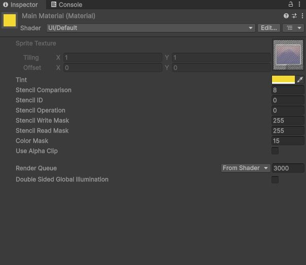

Exploring the Idea of Ultimate God or परब्रह्म through a Game Development Lens
While navigating the depths of spirituality and philosophy, many of us eventually encounter a profound question: What is the nature of the Ultimate Reality? In Hindu philosophy, this supreme reality is often referred to as परब्रह्म (Parabrahman)—the formless, limitless, and eternal source from which all existence emerges.
Within Hinduism, we encounter numerous divine forms such as Bhagwan Vishnu, Bhagwan Shiva, Bhagwan Brahma, and Devi Bhagwati Mata. Each deity possesses unique qualities, symbolism, and cosmic responsibilities. At first glance, they may appear as separate divine entities with distinct identities.
However, many spiritual traditions within Hinduism suggest a deeper truth: these forms are not separate realities but different manifestations of the same ultimate essence—the same underlying तत्व (Tattva).
Interestingly, game development offers an analogy that may help illustrate this concept.
In the world of rendering and game design, Materials play a fundamental role in defining how objects appear. A material determines characteristics such as color, texture, reflectivity, transparency, emission, and surface behavior. Yet a material by itself has no visible shape or form. It exists as pure information until it is applied to a model within the game world.
A sword, a tree, a building, or a character may look entirely different from one another, but the underlying material can be shared among multiple objects. Though the forms differ, the essence responsible for their visual appearance remains the same.
In a similar way, परब्रह्म can be understood as the ultimate essence underlying all existence. It is beyond name, form, limitation, and description. Like a material that exists independently of any model, Parabrahman exists beyond any particular manifestation we perceive.
Just as a material appears in a recognizable form only when applied to a model, the formless Supreme Reality becomes accessible to human understanding through various divine manifestations and अवतार (Avatars). These forms allow us to relate to, worship, and comprehend that which would otherwise remain beyond the grasp of ordinary perception.
Here lies the key insight. Regardless of the shape, size, or purpose of a model, the underlying material remains unchanged. Similarly, whether one worships Bhagwan Vishnu, Bhagwan Shiva, Bhagwan Brahma, or Devi Bhagwati Mata, one is ultimately connecting with different expressions of the same divine essence.
This perspective may also provide an answer to a question that has been discussed for centuries: "Who is the Supreme God?"
Seen through this lens, supremacy does not belong exclusively to any single form. Rather, all divine forms are manifestations of the formless Supreme Reality. Each form highlights different aspects of the same ultimate truth, enabling human beings to approach the infinite through symbols and forms that resonate with them.
The Ultimate Reality does not become limited by these forms any more than a material becomes limited by the model to which it is applied. The forms may vary, but the essence remains constant.
For game developers, this analogy offers an interesting bridge between technology and spirituality. The systems we build often reveal patterns that echo deeper philosophical ideas. A material expressing itself through countless models mirrors the way a single divine essence may express itself through countless manifestations throughout creation.
Perhaps the purpose of these various forms is not to divide our understanding of the divine, but to expand it. By approaching the same truth from different perspectives, we gradually move closer to appreciating the vastness of what ultimately transcends all descriptions, names, and forms.
This analogy may not fully explain the mystery of the divine, but it offers a thought-provoking perspective: beyond every form, every manifestation, and every appearance may lie one eternal essence—the same underlying तत्व that connects all existence.